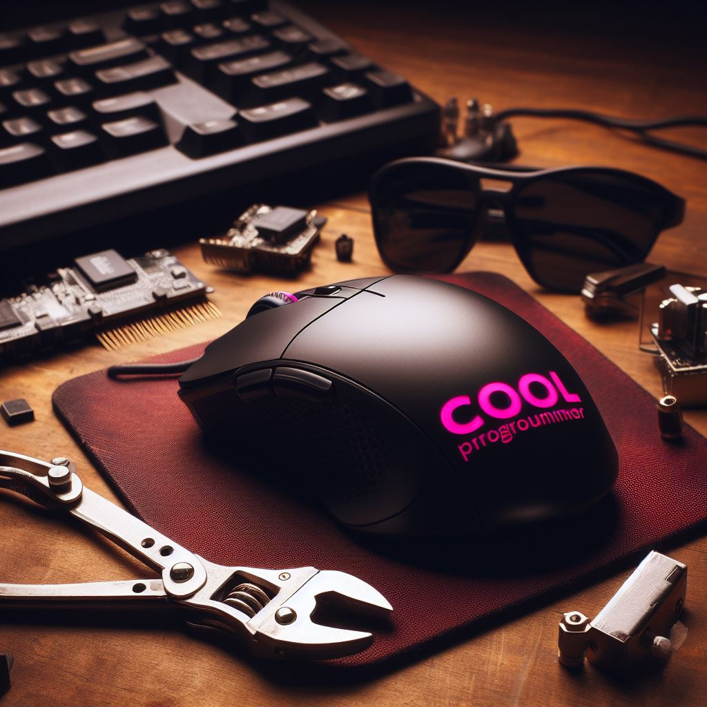

Mouses

Curiosidad acerca de los mouses
El término "ratón" para referirse al dispositivo de entrada se popularizó gracias a su inventora, Douglas Engelbart, que desarrolló el primer prototipo de ratón en la década de 1960 mientras trabajaba en el Stanford Research Institute. La razón por la que lo llamó "ratón" se debe a que el cable que salía del dispositivo se asemejaba a la cola de un ratón. Engelbart eligió este nombre de manera informal y coloquial.
En la demostración pública del sistema de interacción de computadoras que Engelbart presentó el 9 de diciembre de 1968, se utilizaron dos dispositivos de señalización, uno de los cuales era el primer ratón. Este evento fue un hito importante en la historia de la informática, ya que también incluyó la primera demostración pública de la navegación hipertextual y la videoconferencia.
Desde entonces, el término "ratón" se ha vuelto estándar para referirse a este dispositivo de entrada en el mundo de la informática. Es interesante cómo un nombre informal y descriptivo llegó a ser la designación común para un componente tan esencial en nuestras computadoras.